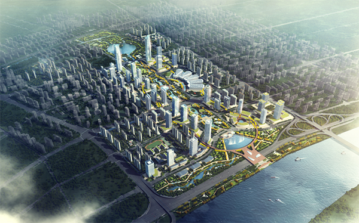
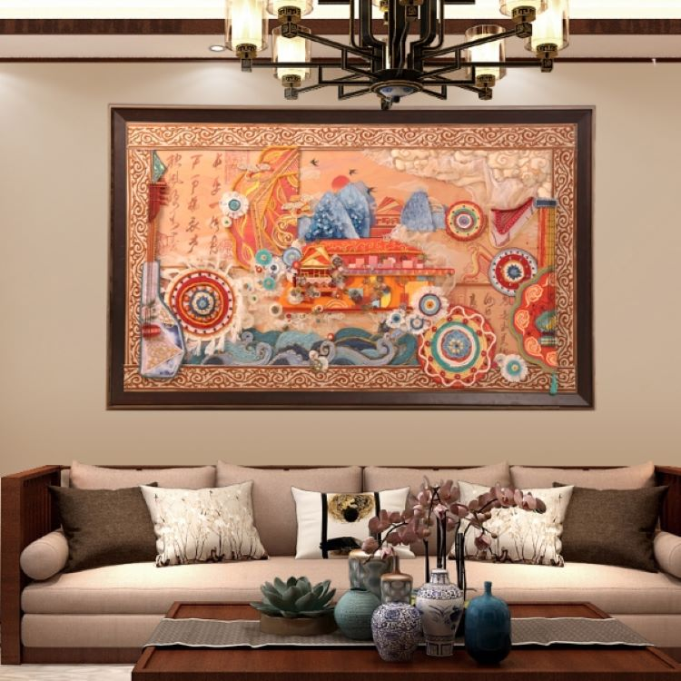

- 
科技是第一生产力
从2018年开始，市本级财政连续三年每年安排科技专项资金10亿元，进一步加大科技创新资金保障。 “十三五”期间，全市科学技术支出累计达到109.93亿元，支持了科教兴市、人才兴市重大战略。2020年 全市财政科技经费支出34.83亿元，是2015年的2.7倍，年均增长22.3%。重点支持企业技术创新、科技 成果转化、创新平台建设，开展关键核心技术攻关和重大技术迭代创新。
激活科技潜能
府财政资金以发放科技创新券的形式，用于支持太原市中小微企业和创新创业团队、创新创业者充 分利用省城科技资源，有效降低创新成本，激发科技创新活力。通过财政补助，支持鼓励企业加大 研发投入、培育发展高新技术企业、鼓励企事业单位技术专利化、引导企业加强知识产权管理、鼓励 企业主导制定技术标准、鼓励企业产出优秀科技成果等6方面强化企业创新主体地位，培育壮大高新技术产业；
旅游业发展迅速
太原市委、市政府通过大型系列活动，不仅在招商引资方面取得了前所未有的成效，而且在文化建设，特 别是对旅游经济的发展起到了巨大的提升作用。以“唐风晋韵，名都太原”为主题的品牌形象已经在全国叫响 ；以晋祠为龙头的太原景区建设和基础建设得到长足的发展；以太原为核心的辐射全省的“三小时旅游经济圈 ”已经形成；以“太原国际面食节”为载体的节庆活动形成了规模；太原旅游发展正面临着前所未有的机遇。

旅游业前景广阔
旅游业是当今世界快速发展的产业，建设旅游强市符合现代经济发展的大趋势，是推进跨越式发展的 战略选择。太原发展旅游业具有明显的区位优势，建设旅游强市前景十分广阔。